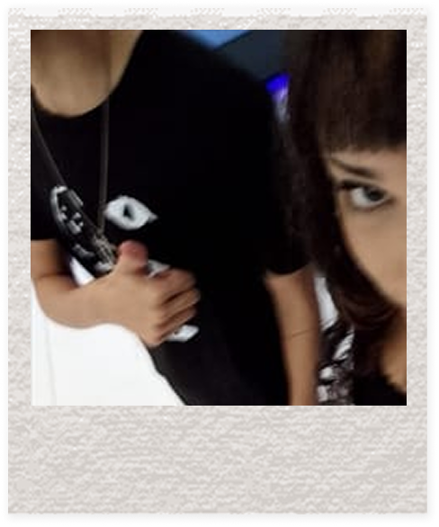
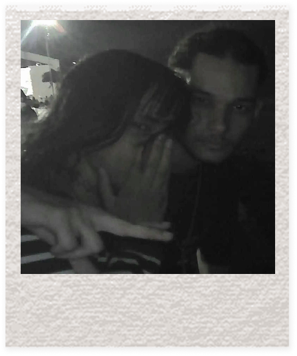
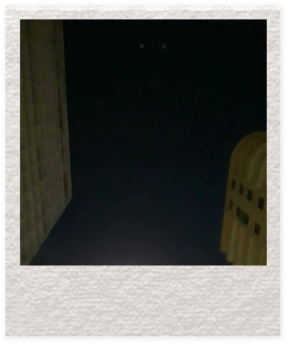
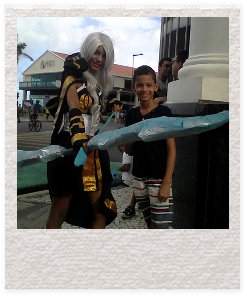
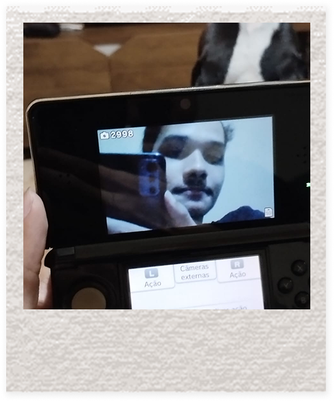
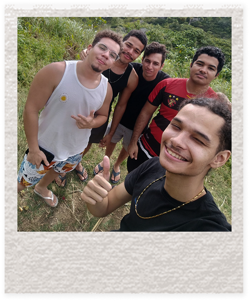
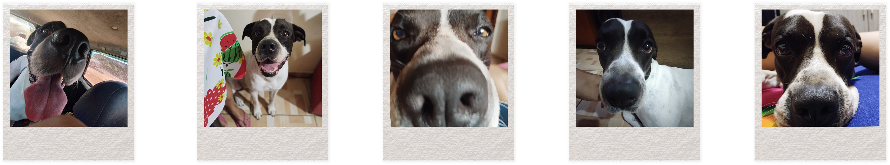
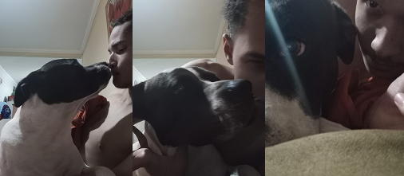

Eu queria poder "eternizar" algumas memórias em algo, por que nao um site? its pretty accurate.. eu não sou boa com palavras btw.

20.10.2024
Essa é a primeira foto que tiramos juntos, não é bem uma foto, like wow, mas eu até botei de wallpaper uma vez.

09.11.2024
Essa aquilles tirou da gente no rec'n play com a minha câmera, quando você me agarrou daquele jeito eu fiquei com vergonha e me perguntei "ele fez isso tão naturalmente, será que ele faz isso com todas? [angry]". Até cheguei a postar na minha antiga conta privada com "Back to the Old House" do The Smiths;
"𝙰𝚗𝚍 𝚢𝚘𝚞 𝚗𝚎𝚟𝚎𝚛 𝚔𝚗𝚎𝚠 𝚑𝚘𝚠 𝚖𝚞𝚌𝚑 𝙸 𝚛𝚎𝚊𝚕𝚕𝚢 𝚕𝚒𝚔𝚎𝚍 𝚢𝚘𝚞, 𝚋𝚎𝚌𝚊𝚞𝚜𝚎 𝙸 𝚗𝚎𝚟𝚎𝚛 𝚎𝚟𝚎𝚗 𝚝𝚘𝚕𝚍 𝚢𝚘𝚞"

24.11.2024
Essa foto não é nossa, yk, mas é uma foto simbólica de um dia bem ruim, na verdade. Eu não conseguia parar de pensar em você, eu tive medo de te perder do começo ao fim.

24.07.2016
Essa aqui também não é nossa, mas eu acredito que tenha sido um momento divertido para você; Se você está feliz, eu também estou. Essa foto é muito fofa, queria ter colocado a sua foto com o boné do John John, mas não achei.

29.10.2025
Quando você ganhou seu 3ds, você tava tão ansioso e feliz pra jogar, eu adorei acompanhar isso. Eu nem me interessava tanto por consoles, mas é legal ouvir você falar sobre.

???
Viagem no interior com os meninos, na verdade eu não gosto muito dessa foto, era para eu estar nessa foto em vez deles.. im feel a little bit jealousy.. mas sei que foi divertido pra você
04.05.2026
Essa foto é só para você lembrar o quão lindo vc é mesmo numa câmera de qualidade ruim.

E claro que precisa ter algumas das milhares de fotos de pacato, essas fotos foram o que mais nos uniu durante momentos sem conversas.

Essas são minhas fotos favoritas.